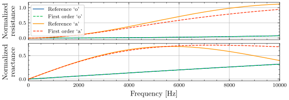

Simple radiation model
At the mouth aperture, the boundary condition is classically represented by a radiation impedance relating pressure and volume flow for time-invariant geometries $$ Z_{\rm rad}(\omega) = \frac{P_{\rm lips}(\omega) - P_0}{Q_{\rm lips}(\omega)} = \frac{P_{\rm rad}(\omega)}{Q_{\rm rad}(\omega)}. $$ Several models of the mouth radiation impedance exist in the literature (see e.g. Wakita 19871, Chalker 1985 2, Vojnovic 20053). From an analytical viewpoint, mathematical expressions for the radiation impedance of a piston in a spherical baffle are available (see e.g. Morse 19864) and constitute a good approximation. However, these expressions involve infinite sums of Legendre and Bessel functions, making them hard to evaluate. Instead, the expression for a piston with infinite plane baffle can be used, as it yields acceptable results when the radius of the aperture (mouth) is small against the radius of the sphere (head), and is easier to compute. It writes $$ \begin{equation} Z_{\rm rad} (\omega) = \frac{\rho_0 c_0}{A_{\rm lips}}\left( 1 - \frac{J_1 (2 k r_{\rm lips}) - j S_1 (2 k r_{\rm lips})}{kr_{\rm lips}} \right), \text{ with } k = \frac{\omega}{c_0}, \label{eq:radiation_imp_infinite} \end{equation} $$ and where \(A_{\rm lips} = \pi r_{\rm lips}^2\) are the mouth aperture area and radius, respectively. Function \(J_1(x)\) is the first-order Bessel function (see Abramowitz 19655 (chapter 4)) and \(S_1(x)\) the first-order Struve function (see Abramowitz 19655 (chapter 12)). This representation cannot easily be converted into a time-domain representation. As a result, a low frequency approximation represented by a filter with a (small) finite number of coefficients is often used and characterized by an electrical circuit equivalent with coefficients depending on the mouth aperture.
The simplest approximation consisting of a first-order high-pass filter is used here, and corresponds to a resistance \(R_{\rm rad}\) in parallel with an acoustic mass \(L_{\rm rad}\). The expression of the radiation impedance then reduces to $$ \begin{equation} Z_{\rm rad}(\omega) = R_{\rm rad} \frac{j \frac{\omega}{\omega_0}}{1 + j\frac{\omega}{\omega_0}}, \text{ with } R_{\rm rad} \geq \text{ and } \omega_0 = \frac{R_{\rm rad}}{L_{\rm rad}}. \label{eq:imp_first_order} \end{equation} $$
Following Flanagan 20136 (section 4.2, equation 4.4), coefficients are obtained from a Taylor series expansion of \eqref{eq:radiation_imp_infinite} as $$ \begin{equation} R_{\rm rad} = Z_0 \frac{128}{9\pi^2}, \; L_{\rm rad} = Z_0 \frac{8r_{\rm lips}}{3\pi c_0}, \text{ with } Z_0= \frac{\rho_0 c_0}{\pi r_{\rm lips}^2}, \label{eq:rad_coeff} \end{equation} $$ where \(r_{\rm lips}\) is the radius of the mouth aperture.

The above figure presents the impedance curves obtained from the analytical model and its first order approximation in a vocal tract like configuration. The validity range of the simplified model depends on the mouth aperture and is reduced for wide openings. For vowel 'o' with \(A_{\rm lips} = 0.14\) cm\(^2\), both models are nearly equivalent in the studied frequency range. However, significant deviation is visible for vowel 'a' with \(A_{\rm lips} = 5.03\) cm\(^2\) and frequencies above \(4000\) Hz. Plane wave propagation is considered in the vocal tract to allow for the 3D to 1D reduction of the fluid model. As this approximation is expected to be valid up to \(\sim 5000\) Hz (see e.g. Blandin 2015 7), the simplified radiation model is suitable in the validity range of the approach for most of the mouth aperture values.
Writing a port-Hamiltonian formulation of the simplified radiation impedance is straightforward from \eqref{eq:imp_first_order}. The state \(x = [Q_{\rm reac}]\) corresponds to the fluid volume flow associated with the acoustic mass \(L_{\rm rad}\). The corresponding Hamiltonian writes \(H (Q_{\rm reac}) = \frac{1}{2} L_{\rm rad} Q_{\rm reac}^2\), with associated dynamics
Alternatively, a second formulation with reversed causality is obtained as
-
Hisashi Wakita and Gunnar Fant. Toward a better vocal tract model. STL-QPSR, 19(1):9–29, 1978. ↩
-
D Chalker and D Mackerras. Models for representing the acoustic radiation impedance of the mouth. IEEE transactions on acoustics, speech, and signal processing, 33(6):1606–1609, 1985. ↩
-
Milan Vojnović and Miomir Mijić. An improved model for the acoustic radiation impedance of the mouth based on an equivalent electrical network. Applied Acoustics, 66(5):481–499, 2005. ↩
-
Philip McCord Morse and K Uno Ingard. Theoretical acoustics. Princeton university press, 1986. ↩
-
Milton Abramowitz and Irene A Stegun. Handbook of mathematical functions: with formulas, graphs, and mathematical tables. Volume 55. Courier Corporation, 1965. ↩↩
-
James L Flanagan. Speech analysis synthesis and perception. Volume 3. Springer Science & Business Media, 1965. ↩
-
Rémi Blandin, Marc Arnela, Rafael Laboissière, Xavier Pelorson, Oriol Guasch, Annemie Van Hirtum, and Xavier Laval. Effects of higher order propagation modes in vocal tract like geometries. The Journal of the Acoustical Society of America, 137(2):832–843, 2015. ↩